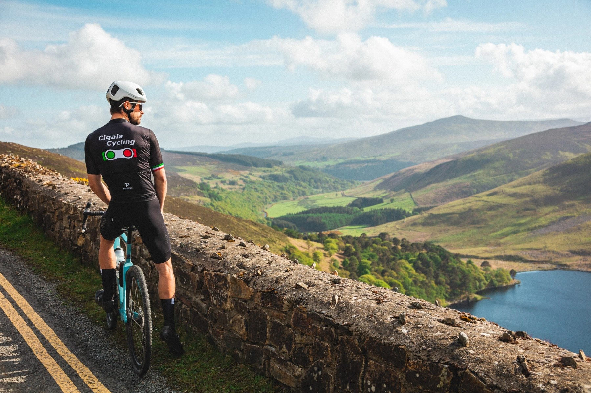

Cigala Cycling × Vivify Sports
Supplement
List
Evidence-based support for cyclists and triathletes.

Marine Lenehan
Sports Nutritionist · Vivify Sports
Evidence-based support for cyclists and triathletes.
Useful, but not daily essentials:
The same colours as the Nutritional Guide: green for vitamins and minerals, orange for carbohydrate fuel, rose for protein and recovery.
A general starting point by discipline and event length. The right choices depend on your event, your blood results and what you tolerate. Practise everything in training.

The everyday foundation, ideally guided by a blood panel
| Supplement | Dose / detail | Notes |
|---|---|---|
| Multivitamin A–Z | – | Broad cover for gaps in the diet. |
| Vitamin D (D3) | – | Bone health and immune function. Check levels, especially in low-sunlight months. |
| Omega-3 | – | Specifically during high training loads, or if the diet is low in fish. |
| Zinc | – | Immune system and men’s health. |
| Evening primrose | – | Women’s health. |
| Iron | Only if deficient | Common in female and endurance athletes. Supplement only after a blood test. |
| Vitamin B12 | – | For vegan and plant-based athletes. |
| Supplement | Dose / detail | Notes |
|---|---|---|
| Vitamin C | – | Prefer natural sources like acerola, or directly from food. Useful, not a daily essential. |
| B complex | – | For specific cases only. Useful, not a daily essential. |
| Creatine monohydrate | 3–5 g / day when used | Strength, power and recovery. Useful, not a daily essential. May add around 1 kg of water weight. |
| Probiotics | – | Gut health and travel. Useful, not a daily essential. Effects are strain-specific. |
| Ashwagandha | – | Attention to thyroid conditions. Do not supplement without advice. |
Before hard and long sessions
| Supplement | Dose / detail | Notes |
|---|---|---|
| Arginine | 3 g | – |
| Caffeine | 100 mg | 1 hour before. |
| Beetroot juice | Delivering 500 mg nitrates | Only before threshold or VO2 sessions, at least 90 minutes before. |
| Electrolyte drink | With pre-session fluids | Useful in the heat, for heavy sweaters and for indoor training. |
Specific protocol required
| Supplement | Dose / detail | Notes |
|---|---|---|
| Beta-alanine | – | Taken over several weeks. Can cause harmless tingling. |
| Creatine | – | Loading or daily maintenance, depending on the plan. |
| Glycerol | – | Hyperhydration for hot races. Trial in training. |
| Sodium bicarbonate | – | Buffers acidity in high-intensity efforts. Can upset the stomach, so trial in training. |
| Caffeine | – | Typically 3–6 mg/kg about 60 minutes before. Trial in training. |
| Beetroot juice | – | Nitrate loading ahead of the event. |
| Electrolytes | Potassium, chloride, calcium, magnesium, sodium | – |
Each of these needs an individual protocol covering dose, timing and loading. Trial everything in training, never for the first time on race day.
Fuel, fluids and electrolytes
| Supplement | Dose / detail | Notes |
|---|---|---|
| Gels | – | Prefer gels with 40 g of carbs per gel. |
| Carbohydrate bars | – | A minimum of 20 g of carbs per bar. |
| Carbohydrate & caffeine gels | – | Don’t take more than 420 mg of caffeine per race. |
| Carbohydrate jellies | – | – |
| Pickle juice | – | Cramp prevention. |
| Quinine | – | Perception of effort. |
| Electrolytes | – | – |
| Carbohydrate drink mix | 60–120 g carbs / hour | Glucose plus fructose for long training and races. Practise in training. |
| Caffeine chews or gum | – | Fast-acting option when gels are impractical, such as the run leg of a triathlon. |
| Sodium capsules or salt tablets | – | Hot conditions and heavy sweaters. Trial in training. |
After races and hard or long training
| Supplement | Dose / detail | Notes |
|---|---|---|
| Whey protein (ALWAYS) | 25–30 g | – |
| L-Leucine | 4 g | If using a vegan protein powder. |
| Cherry juice | 30 ml | Stage races or altitude camps. |
| BCAA | 1000 mg (500 mg L-Leucine, 250 mg L-Isoleucine, 250 mg L-Valine) | If using a vegan protein powder or unable to have a protein shake. |
| Magnesium bisglycinate | 400 mg / day | – |
| Electrolytes | Potassium, chloride, calcium, magnesium, sodium | – |
| Food polyphenols | – | NZ blackcurrants, cherry juice, grape juice, blueberries, mixed berries, quercetin. |
| Collagen | 20 g with vitamin C | Specific training blocks only, not after every recovery ride. |
| Carbohydrate recovery drink | 1–1.2 g/kg per hour for the first 4 hours | When the next hard session is within 8 hours. |
| Casein protein | 30–40 g before sleep | Supports overnight recovery. |
Test first. The best way to know if you need supplements is a full blood panel.
Choose batch-tested products. Look for independent testing such as Informed Sport, especially if you are subject to anti-doping rules.
Trial in training. Never try a new supplement or dose for the first time on race day.
Check with a professional if you have a medical condition or take medication.
A healthy diet is always the 1st option. Healthy foods provide many substances, including vitamins and minerals, to keep us strong and healthy.
You can’t just eat an orange or pop in a vitamin pill and expect one quick burst of vitamin C to prevent a cold and boost the immune system, for example. Also, it’s best for some vitamins and minerals to come from our foods rather than pill form.
If you would like more tailored advice on food supplements, VIVIFY SPORTS can provide you with a complete nutritional assessment. Supplements are here to support your training. If taken wrong they can actually be detrimental and decrease performance.